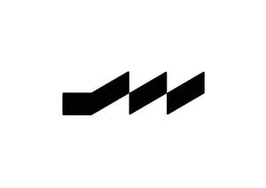

Trade Mark Journal No.2025/030 25 July 2025
UK00004235633 17 July 2025 (5,21,25,35)

- Class 5
- Nutritional supplements; Dietary and nutritional supplements; Mineral nutritional supplements; Dietary supplements promoting fitness and endurance; Nutraceuticals for use as a dietary supplement; Fitness and endurance supplements; Powdered nutritional supplement energy drink mix; Dietary supplements; Mineral dietary supplements for humans; Powdered nutritional supplement drink mix; Powdered fruit-flavored dietary supplement drink mix; Dietary supplement drink mixes; Herbal supplements; Mineral dietary supplements; Dietary supplements in powder form; Health food supplements made principally of vitamins; Health food supplements made principally of minerals; Dietary supplement drinks.
- Class 21
- Shaker bottles sold empty; Bottles; Water bottles; Plastic water bottles; Aluminum water bottles, empty; Drinking bottles; Aluminum water bottles; Water bottles sold empty; Sports bottles [empty]; Reusable stainless steel water bottles sold empty; Reusable stainless steel water bottles; Bottles, sold empty; Drinking bottles for sports; Reusable bottles; Reusable plastic water bottles sold empty; Plastic water bottles [empty]; Water bottles for bicycles; Empty water bottles for bicycles; Plastic bottles; Water bottles for bicycles, sold empty; Drinkware; Drinking vessels.
- Class 25
- T-shirts; Short-sleeved T-shirts; Sweatshirts; Long-sleeved shirts; Short-sleeved shirts; Hoodies; Sweat shirts; Sports shirts; Sport shirts; Shorts [clothing]; Sports shirts with short sleeves; Sweaters; Hats; Hooded sweatshirts; Hooded sweat shirts; Hooded pullovers; Short-sleeve shirts; Sweatpants; Sports caps and hats; Caps [headwear]; Caps being headwear; Headwear; Sportswear; Ready-to-wear clothing; Clothing for sports; Sports clothing; Sports garments; Athletic clothing; Clothes for sports; Clothes for sport.
- Class 35
- Advertising services for the promotion of e-commerce; Online marketing; Retail services in relation to dietary supplements; Retail services in relation to non-alcoholic beverages; Retail services connected with the sale of clothing and clothing accessories; Online retail services relating to clothing; Online retail store services relating to clothing; Online retail store services in relation to clothing; Wholesale services in relation to dietary supplements.
JS PERFORMANCE SUPPLEMENTS LIMITED